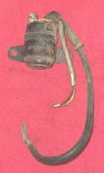

You press the start button and there is no click and no sound. The starter circuit has a small control side (key, fuse, start button, engine stop switch, safety switches, relay coil) and a heavy side (battery, relay contacts, starter motor). Total silence usually means the control side never reached the relay, or the battery is completely flat. Check the free and simple things first.
Is it safe to ride?
The fault itself is not dangerous. If the bike has a kickstarter and starts with it, you can ride, but get the fault checked: a fuel-injected bike with a flat battery may stop on the road.
Quick checks first
- Key ON: do the dashboard lights come on?
- Engine stop switch on RUN.
- Gearbox in neutral (neutral light on), or clutch lever pulled fully.
- Side stand up. Scooters: pull a brake lever while pressing start.
- Press the horn: is it loud or weak?
Diagnose it step by step
1With the key ON, do the dashboard lights come on?
- No: the bike has no power. Go to Nothing happens when the key is turned on.
- Yes: go to step 2.
2Is the engine stop switch on RUN, the bike in neutral or the clutch pulled, the side stand up (and the brake pulled on a scooter)?
- No: set them and try again. These are normal safety rules, see Will not start in gear, on the side stand or without the clutch pulled.
- Yes, still silent: go to step 3.
3Are the horn and headlight strong, and does the battery read at or above the charged value?
- No: charge or replace the battery with Test and charge a 12 V battery, and clean the terminals with Clean and tighten battery terminals.
- Yes: go to step 4.
4Are the starter fuse and main fuse good?
- No: replace with the same rating and find why it blew. See Check fuses and relays. A fuse that blows again: Fuse keeps blowing.
- Yes: go to step 5.
5Put a finger on the starter relay and press start. Can you feel or hear a click?
- Yes: the control side works. Go to Starter relay clicks but the engine does not turn.
- No: go to step 6.
6Does battery voltage reach the relay coil wire when you press start (clutch pulled, key ON)?
- No: the fault is in the start button, engine stop switch, key switch or wiring. Use Test the engine stop switch and Clean a handlebar switch.
- Yes: go to step 7.
7Does the relay coil have a path to earth through the clutch or neutral switch?
- No: Test the side stand, clutch and neutral switches.
- Yes: the relay coil is faulty. Test the starter relay.
Never bridge the relay terminals with a screwdriver to test it. The spark can burn you or light fuel vapour, and the bike can start in gear.
Causes, most likely first
| Cause | How to confirm | Fix |
|---|---|---|
| Not in neutral, clutch not pulled, side stand down, stop switch on STOP | Starts once set correctly | Test the side stand, clutch and neutral switches if a switch is faulty |
| Very flat battery or loose terminal | Dim or no dash lights; low voltage | Test and charge a 12 V battery |
| Blown fuse | Fuse wire broken | Check fuses and relays |
| Dirty start button or stop switch | No voltage at relay coil when pressed | Test the engine stop switch |
| Faulty clutch or neutral switch | No earth on relay coil | Test the side stand, clutch and neutral switches |
| Relay coil open | Coil reads open on the meter | Test the starter relay |
| Broken wire or connector | Voltage lost between two points | Test the starter circuit |